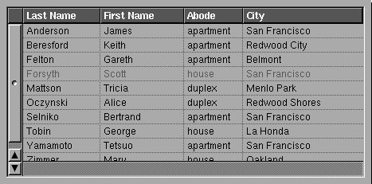

Copyright ª1997 by Apple Computer, Inc. All Rights Reserved.
p NSTableView
Inherits From: NSControl : NSView : NSResponder : NSObject
Conforms To: NSCoding (NSResponder)
NSObject (NSObject)
Declared In: AppKit/NSTableView.h
Purpose
An NSTableView object displays record-oriented data in a table, and allows the user to edit values and resize and rearrange columns.
Principal Attributes
• Displays record-oriented data • Works with NSScrollView
• Gets data from an object you provide • Uses a delegate
• Lazily retrieves only data that needs to be displayed
Creation
Interface Builder
- initWithFrame: Designated initializer
Commonly Used Methods
- dataSource Returns the object providing the data that the NSTableView displays.
- tableColumns Returns the NSTableColumn objects representing attributes for the NSTableView.
- selectedColumn Returns the index of the selected column.
- selectedRow Returns the index of the selected column.
- numberOfRows Returns the number of rows in the NSTableView.
- reloadData Informs the NSTableView that data has changed and needs to be retrieved and displayed again.
Class Description
An NSTableView displays data for a set of related records, with rows representing individual records and columns representing the attributes of those records. A record is a set of values for a particular real-world entity, such as an employee or a bank account. For example, in a table of employee records, each row represents one employee, and the columns represent such attributes as the first and last name, address, salary, and so on. An NSTableView is usually displayed in an NSScrollView, like this:

In this illustration, the NSTableView itself is only the portion displaying values. The header is drawn by two auxiliary views: the column headers by the header view, and the blank square above the vertical scroller by the corner view. The roles of these two auxiliary views are discussed in “Auxiliary Components.”
The user selects rows or columns in the table by clicking, and edits individual cells by double-clicking. The user can also rearrange columns by dragging the column headers and can resize the columns by dragging the divider between two column headers. You can configure the table's parameters so that the user can select more than one row or column (or have none selected), so that the user isn't allowed to edit particular columns or rearrange them, and so on. You can also specify an action message to be sent when the user double-clicks something other than an editable cell.
Providing Data for Display
Unlike most NSControls, an NSTableView doesn't store or cache the data it displays. Instead, it gets all of its data from an object that you provide, called its data source. Your data source object can store records in any way, but it must be able to identify them by integer index and must implement methods to provide the following information: how many records the data source contains, and what the value is for a particular record's attribute. If you want to allow the user to edit the records, you must also provide a method for changing the value of an attribute. These methods are described in the NSTableDataSource informal protocol specification.
A record attribute is indicated by an object called its identifier, which is associated with a column in the NSTableView, as described in “Auxiliary Components.” The data source uses the identifier as a key to retrieve values for the attribute—because columns can be reordered, their indices can't be used to identify record attributes. The identifier can be any kind of object that uniquely identifies attributes for the data source. For example, if you specify identifiers as NSStrings containing the names of attributes, such as “Last Name”, “Address”, and so on, the data source object can use these strings as keys into NSDictionary objects. See the NSTableDataSource informal protocol specification for example of how to use identifiers.
Auxiliary Components
As indicated earlier, an NSTableView is usually displayed in an NSScrollView along with its two auxiliary views, the corner view and the header view. The corner view is by default a simple view that merely fills in the corner above the vertical scroller. You can replace the default corner view with a custom view; for example, a button that sorts based on the selected column. The header view is usually an instance of the NSTableHeaderView class, which draws the column headers and handles column selection, rearranging, and resizing. NSScrollView queries any document view it's given for the cornerView and headerView methods, and if the document view responds and returns objects for them, the NSScrollView automatically tiles them along with its scrollers and the document view.
The NSTableView and the NSTableHeaderView both need access to information about columns (such as their width), so this information is encapsulated in NSTableColumn objects. An NSTableColumn stores its column's width, and determines whether the user can resize the column or edit its cells. It also holds an NSCell object that the NSTableHeaderView uses to draw the column header, and an NSCell object that the NSTableView uses to draw values in the column (it reuses the same NSCell for each row in the column). Finally, the NSTableColumn holds the attribute identifier mentioned in “Providing Data for Display.”
The cell for each column header is by default an instance of the NSTableHeaderCell class; it's used by the NSTableHeaderView to draw the column's header. An NSTableHeaderCell contains the title displayed over the column, as well as the font and color for that title. You use the API of its superclasses, NSTextFieldCell and NSCell, to set a column's title and to specify display attributes for that title (font, alignment, and so on). In addition, you can use the NSCell method setImage: to make the NSTableHeaderCell display an image instead of a title. To remove the image and restore the title, use the NSCell method setStringValue:.
The data cell for the column values is typically an instance of NSTextFieldCell, but can be an instance of any NSCell subclass, such as NSImageCell. This object is used to draw all values in the column and determines the font, alignment, text color, and other such display attributes for those values. You can customize the presentation of various kinds of values by assigning an NSFormatter to the cell. For example, to properly display NSDate values in a column, assign its data cell an NSDateFormatter.
Delegate Messages
NSTableView adds a handful of delegate messages to those defined by its superclass, NSControl. These methods give the delegate control over the appearance of individual cells in the table, over changes in selection, and over editing of cells. The delegate methods that request permission to alter the selection or edit a value are invoked during user actions that affect the NSTableView, but not when you change things programmatically; when making changes programmatically you decide whether you want the delegate to intervene and send the appropriate message (checking that the delegate responds first, of course). Because the delegate methods involve the actual data displayed by the NSTableView, the delegate is typically the same object as the data source.
tableView:willDisplayCell:forTableColumn:row: informs the delegate that the NSTableView is about to draw a particular cell. The delegate can modify the NSCell provided to alter the display attributes for that cell; for example, making uneditable values display in italic or gray text (as in the figure above).
tableView:shouldSelectRow: and tableView:shouldSelectTableColumn: give the delegate control over whether the user can select a particular row or column (though the user can still reorder columns). This is useful for disabling particular rows or columns. For example, in a database client application, when another user is editing a record you might want all other users not to be able to select it.
selectionShouldChangeInTableView: allows the delegate to deny a change in selection; for example, if the user is editing a cell and enters an improper value, the delegate can prevent the user from selecting or editing any other cells until a proper value has been entered into the original cell.
tableView:shouldEditTableColumn:row: asks the delegate whether it's okay to edit a particular cell. The delegate can approve or deny the request.
In addition to these methods, the delegate is also automatically registered to receive messages corresponding to NSTableView notifications. These inform the delegate when the selection changes and when a column is moved or resized:
Delegate Message Notification
tableViewColumnDidMove: NSTableViewColumnDidMoveNotification
tableViewColumnDidResize: NSTableViewColumnDidResizeNotification
tableViewSelectionDidChange: NSTableViewSelectionDidChangeNotification
tableViewSelectionIsChanging: NSTableViewSelectionIsChangingNotification
Method Types
Creating an instance - initWithFrame:
Setting the data source - setDataSource:
- dataSource
Loading data - reloadData
Target-action behavior - setDoubleAction:
- doubleAction
- clickedColumn
- clickedRow
Configuring behavior - setAllowsColumnReordering:
- allowsColumnReordering
- setAllowsColumnResizing:
- allowsColumnResizing
- setAllowsMultipleSelection:
- allowsMultipleSelection
- setAllowsEmptySelection:
- allowsEmptySelection
- setAllowsColumnSelection:
- allowsColumnSelection
Setting display attributes - setIntercellSpacing:
- intercellSpacing
- setRowHeight:
- rowHeight
- setBackgroundColor:
- backgroundColor
Manipulating columns - addTableColumn:
- removeTableColumn:
- moveColumn:toColumn:
- tableColumns
- columnWithIdentifier:
- tableColumnWithIdentifier:
Selecting columns and rows - selectColumn:byExtendingSelection:
- selectRow:byExtendingSelection:
- deselectColumn:
- deselectRow:
- numberOfSelectedColumns
- numberOfSelectedRows
- selectedColumn
- selectedRow
- isColumnSelected:
- isRowSelected:
- selectedColumnEnumerator
- selectedRowEnumerator
- selectAll:
- deselectAll:
Getting the dimensions of the table - numberOfColumns
- numberOfRows
Setting grid attributes - setDrawsGrid:
- drawsGrid
- setGridColor:
- gridColor
Editing cells - editColumn:row:withEvent:select:
- editedRow
- editedColumn
Setting auxiliary views - setHeaderView:
- headerView
- setCornerView:
- cornerView
Layout support - rectOfColumn:
- rectOfRow:
- columnsInRect:
- rowsInRect:
- columnAtPoint:
- rowAtPoint:
- frameOfCellAtColumn:row:
- setAutoresizesAllColumnsToFit
- autoresizesAllColumnsToFit
- sizeLastColumnToFit
- sizeToFit
- noteNumberOfRowsChanged
- tile
Drawing - drawRow:clipRect:
- drawGridInClipRect:
- highlightSelectionInClipRect:
Scrolling - scrollRowToVisible:
- scrollColumnToVisible:
Text delegate methods - textShouldBeginEditing:
- textDidBeginEditing:
- textDidChange
- textShouldEndEditing:
- textDidEndEditing:
Setting the delegate - setDelegate:
- delegate
Instance Methods
p addTableColumn:
- (void)addTableColumn:(NSTableColumn *)aColumn
Appends aColumn to the receiver.
See also: - sizeLastColumnToFit, - sizeToFit, - removeTableColumn:
p allowsColumnReordering
- (BOOL)allowsColumnReordering
Returns YES if the receiver allows the user to rearrange columns by dragging their headers, NO otherwise. The default is YES. You can rearrange columns programmatically regardless of this setting.
See also: - moveColumn:toColumn:, - setAllowsColumnReordering:
p allowsColumnResizing
- (BOOL)allowsColumnResizing
Returns YES if the receiver allows the user to resize columns by dragging between their headers, NO otherwise. The default is YES. You can resize columns programmatically regardless of this setting.
See also: - setWidth: (NSTableColumn), - setAllowsColumnResizing:
p allowsColumnSelection
- (BOOL)allowsColumnSelection
Returns YES if the receiver allows the user to select columns by clicking their headers, NO otherwise. The default is YES. You can select columns programmatically regardless of this setting.
See also: - selectColumn:byExtendingSelection:, - allowsColumnReordering, - setAllowsColumnSelection:
p allowsEmptySelection
- (BOOL)allowsEmptySelection
Returns YES if the receiver allows the user to select zero columns or rows, NO otherwise. The default is YES.
You can not set an empty selection programmatically if this setting is NO, unlike with the other settings that affect selection behavior.
See also: - deselectAll:, - deselectColumn:, - deselectRow:, - setAllowsEmptySelection:
p allowsMultipleSelection
- (BOOL)allowsMultipleSelection
Returns YES if the receiver allows the user to select more than one column or row at a time, NO otherwise. The default is NO. You can select multiple columns or rows programmatically regardless of this setting.
See also: - selectColumn:byExtendingSelection:, - selectRow:byExtendingSelection:, - setAllowsMultipleSelection:
p autoresizesAllColumnsToFit
- (BOOL)autoresizesAllColumnsToFit
Returns YES if the receiver proportionally resizes its columns to fit when its superview's frame changes, NO if it only resizes the last column.
See also: - setAutoresizesAllColumnsToFit:, - sizeLastColumnToFit, - sizeToFit
p backgroundColor
- (NSColor *)backgroundColor
Returns the color used to draw the background of the receiver. The default background color is light gray.
See also: - setBackgroundColor:
p clickedColumn
- (int)clickedColumn
Returns the index of the column the user clicked to trigger an action message. The return value of this method is meaningful only in the target's implementation of the action or double-action method.
See also: - clickedRow, - setAction: (NSControl), - setDoubleAction:
p clickedRow
- (int)clickedRow
Returns the index of the row the user clicked to trigger an action message. The return value of this method is meaningful only in the target's implementation of the action or double-action method.
See also: - clickedColumn, - setAction: (NSControl), - setDoubleAction:
p columnAtPoint:
- (int)columnAtPoint:(NSPoint)aPoint
Returns the index of the column that aPoint lies in, or -1 if aPoint lies outside the receiver's bounds.
See also: - rowAtPoint:
p columnsInRect:
- (NSRange)columnsInRect:(NSRect)aRect
Returns a range of indices for the receiver's columns that lie wholly or partially within the horizontal boundaries of aRect; the location of the range is the first such column's index, and the length is the number of columns that lie in aRect. Both the width and height of aRect must be nonzero values, or columnsInRect: returns an NSRange whose length is zero.
See also: - rowsInRect:
p columnWithIdentifier:
- (int)columnWithIdentifier:(id)anObject
Returns the index of the first column in the receiver whose identifier is equal to anObject, when compared using isEqual:, or -1 if no columns are found with the specified identifier.
See also: - tableColumnWithIdentifier:
p cornerView
- (NSView *)cornerView
Returns the NSView used to draw the area to the left of the column headers and above the vertical scroller of the enclosing NSScrollView. This is by default a simple view that merely fills in its frame, but you can replace it with a custom view using setCornerView:.
See also: - headerView
p dataSource
- (id)dataSource
Returns the object that provides the data displayed by the receiver. See the class description and the NSTableDataSource informal protocol specification for more information.
See also: - setDataSource:
p delegate
- (id)delegate
Returns the receiver's delegate.
See also: - setDelegate:
p deselectAll:
- (void)deselectAll:(id)sender
Deselects all selected rows or columns if empty selection is allowed, otherwise does nothing. Posts NSTableViewSelectionDidChangeNotification to the default notification center if the selection does in fact change.
As a target-action method, deselectAll: checks with the delegate before changing the selection, using selectionShouldChangeInTableView:.
See also: - allowsEmptySelection, - selectAll:, - selectColumn:byExtendingSelection:
p deselectColumn:
- (void)deselectColumn:(int)columnIndex
Deselects the column at columnIndex if it's selected, regardless of whether empty selection is allowed. If the selection does in fact change, posts NSTableViewSelectionDidChangeNotification to the default notification center.
If the indicated column was the last column selected by the user, the column nearest it effectively becomes the last selected column. In case of a tie, priority is given to the column on the left.
This method doesn't check with the delegate before changing the selection.
See also: - selectedColumn, - allowsEmptySelection, - selectRow:byExtendingSelection:
p deselectRow:
- (void)deselectRow:(int)rowIndex
Deselects the row at rowIndex if it's selected, regardless of whether empty selection is allowed. If the selection does in fact change, posts NSTableViewSelectionDidChangeNotification to the default notification center.
If the indicated row was the last row selected by the user, the row nearest it effectively becomes the last selected row. In case of a tie, priority is given to the row above.
This method doesn't check with the delegate before changing the selection.
See also: - selectedRow, - allowsEmptySelection
p doubleAction
- (SEL)doubleAction
Returns the message sent to the target when the user double-clicks a column header or an uneditable cell.
See also: - action (NSControl), - target (NSControl), - setDoubleAction:
p drawGridInClipRect:
- (void)drawGridInClipRect:(NSRect)aRect
Draws the grid lines within aRect, using the grid color set with setGridColor:. This method draws a grid regardless of whether the receiver is set to draw one automatically.
Subclasses can override this method to draw grid lines other than the standard ones.
See also: - gridColor, - setIntercellSpacing:, - drawsGrid, - drawRow:clipRect:, - highlightSelectionInClipRect:
p drawRow:clipRect:
- (void)drawRow:(int)rowIndex clipRect:(NSRect)clipRect
Draws the cells for the row at rowIndex in the columns that intersect clipRect. Sends tableView:willDisplayCell:forTableColum:row: to the delegate before drawing each cell.
Subclasses can override this method to customize their appearance.
See also: - columnsInRect:, - highlightSelectionInClipRect:, - drawGridInClipRect:
p drawsGrid
- (BOOL)drawsGrid
Returns YES if the receiver draws grid lines around cells, NO if it doesn't. The default is YES.
See also: - gridColor, - drawGridInClipRect:, - setDrawsGrid
p editColumn:row:withEvent:select:
- (void)editColumn:(int)columnIndex
row:(int)rowIndex
withEvent:(NSEvent *)theEvent
select:(BOOL)flag
Edits the cell at columnIndex and rowIndex, selecting its entire contents if flag is YES. This method is invoked automatically in response to user actions; you should rarely need to invoke it directly. theEvent is usually the mouse event that triggered editing; it can be nil when starting an edit programmatically.
This method scrolls the receiver so that the cell is visible, sets up the field editor, and sends selectWithFrame:inView:editor:delegate:start:length: and editWithFrame:inView:editor:delegate:event: to the field editor's NSCell object with the NSTableView as the text delegate.
See also: - isEditable, - editedColumn, - editedRow
p editedColumn
- (int)editedColumn
If sent during editColumn:row:withEvent:select: returns the index of the column being edited; otherwise returns -1.
p editedRow
- (int)editedRow
If sent during editColumn:row:withEvent:select: returns the index of the row being edited; otherwise returns -1.
p frameOfCellAtColumn:row:
- (NSRect)frameOfCellAtColumn:(int)columnIndex row:(int)rowIndex
Returns a rectangle locating the cell that lies at the intersection of columnIndex and rowIndex. Returns NSZeroRect if columnIndex or rowIndex are greater than the number of columns or rows in the NSTableView.
The result of this method is used in a drawWithFrame:inView: message to the NSTableColumn's data cell.
See also: - rectOfColumn:, - rectOfRow:
p gridColor
- (NSColor *)gridColor
Returns the color used to draw grid lines. The default color is gray.
See also: - drawsGrid, - drawGridInClipRect:, - setGridColor:
p headerView
- (NSTableHeaderView *)headerView
Returns the NSTableHeaderView used to draw headers over columns, or nil if the NSTableView has no header view. See the class description and the NSTableHeaderView class specification for more information.
See also: - setHeaderView:
p highlightSelectionInClipRect:
- (void)highlightSelectionInClipRect:(NSRect)clipRect
Highlights the region of the receiver in clipRect. This method is invoked before drawRow:clipRect:.
Subclasses can override this method to change the manner in which they highlight selections.
See also: - drawGridInClipRect:
p initWithFrame:
- (id)initWithFrame:(NSRect)frameRect
Initializes a newly allocated NSTableView with frameRect as its frame rectangle. The new NSTableView has a header view but has no columns; you can create NSTableColumn objects, set their titles and attributes, and add them to the new NSTableView with addTableColumn:. You must also set the NSTableView up in an NSScrollView with NSScrollView's setDocView: method. This is the designated initializer for the NSTableView class. Returns self.
It's usually more convenient to create an NSTableView using Interface Builder. Interface Builder lets you create an NSTableView already embedded in an NSScrollView, add and name the columns, and set up a data source.
p intercellSpacing
- (NSSize)intercellSpacing
Returns the horizontal and vertical spacing between cells. The default spacing is (3.0, 2.0).
See also: - setDrawsGrid:, - setIntercellSpacing:
p isColumnSelected:
- (BOOL)isColumnSelected:(int)columnIndex
Returns YES if the column at columnIndex is selected, NO otherwise.
See also: - selectedColumn, - selectedColumnEnumerator, - selectColumn:byExtendingSelection:
p isRowSelected:
- (BOOL)isRowSelected:(int)rowIndex
Returns YES if the row at rowIndex is selected, NO otherwise.
See also: - selectedRow, - selectedRowEnumerator, - selectRow:byExtendingSelection:
p moveColumn:toColumn:
- (void)moveColumn:(int)columnIndex toColumn:(int)newIndex
Moves the column and heading at columnIndex to newIndex, inserting the column before the existing column at newIndex.
This method posts NSTableViewColumnDidMoveNotification to the default notification center.
p noteNumberOfRowsChanged
- (void)noteNumberOfRowsChanged
Informs the receiver that the number of records in its data source has changed, allowing the receiver to update the scrollers in its NSScrollView without actually reloading data into the receiver. It's useful for a data source that continually receives data in the background over a period of time, in which case the NSTableView can remain responsive to the user while the data is received.
See the NSTableDataSource informal protocol specification for information on the messages an NSTableView sends to its data source.
See also: - reloadData, - numberOfRowsInTableView: (NSTableDataSource informal protocol)
p numberOfColumns
- (int)numberOfColumns
Returns the number of columns in the receiver.
See also: - numberOfRows
p numberOfRows
- (int)numberOfRows
Returns the number of rows in the receiver.
See also: - numberOfColumns, - numberOfRowsInTableView: (NSTableDataSource informal protocol)
p numberOfSelectedColumns
- (int)numberOfSelectedColumns
Returns the number of selected columns.
See also: - numberOfSelectedRows, - selectedColumnEnumerator
p numberOfSelectedRows
- (int)numberOfSelectedRows
Returns the number of selected rows.
See also: - numberOfSelectedColumns, - selectedRowEnumerator
p rectOfColumn:
- (NSRect)rectOfColumn:(int)columnIndex
Returns the rectangle containing the column at columnIndex. Raises an NSInternalInconsistencyException if columnIndex lies outside the range of valid column indices for the NSTableView.
See also: - frameOfCellAtColumn:row:, - rectOfRow:, - headerRectOfColumn: (NSTableHeaderView)
p rectOfRow:
- (NSRect)rectOfRow:(int)rowIndex
Returns the rectangle containing the row at rowIndex. Raises an NSInternalInconistencyException if columnIndex lies outside the range of valid column indices for the receiver.
See also: - frameOfCellAtColumn:row:, - rectOfColumn:
p reloadData
- (void)reloadData
Marks the receiver as needing redisplay, so that it will reload the data for visible cells and draw the new values.
See also: - noteNumberOfRowsChanged
p removeTableColumn:
- (void)removeTableColumn:(NSTableColumn *)aTableColumn
Deletes aTableColumn from the receiver.
See also: - sizeLastColumnToFit, - sizeToFit, - addTableColumn:
p rowAtPoint:
- (int)rowAtPoint:(NSPoint)aPoint
Returns the index of the row that aPoint lies in, or -1 if aPoint lies outside the receiver's bounds.
See also: - columnAtPoint:
p rowHeight
- (float)rowHeight
Returns the height of each row in the receiver. The default row height is 16.0.
See also: - setRowHeight:
p rowsInRect:
- (NSRange)rowsInRect:(NSRect)aRect
Returns a range of indices for the rows that lie wholly or partially within the vertical boundaries of aRect; the location of the range is the first such row's index, and the length is the number of rows that lie in aRect. Both the width and height of aRect must be nonzero values, or columnsInRect: returns an NSRange whose length is zero.
See also: - columnsInRect:
p scrollColumnToVisible:
- (void)scrollColumnToVisible:(int)columnIndex
Scrolls the receiver and header view horizontally in an enclosing NSClipView so that the column specified by columnIndex is visible.
See also: - scrollRowToVisible:, - scrollToPoint: (NSClipView)
p scrollRowToVisible:
- (void)scrollRowToVisible:(int)rowIndex
Scrolls the receiver vertically in an enclosing NSClipView so that the row specified by rowIndex is visible.
See also: - scrollColumnToVisible:, - scrollToPoint: (NSClipView)
p selectAll:
- (void)selectAll:(id)sender
If the table allows multiple selection, selects all rows or all columns, according to whether rows or columns were most recently selected; otherwise does nothing. Posts NSTableViewSelectionDidChangeNotification to the default notification center if the selection does in fact change.
As a target-action method, selectAll: checks with the delegate before changing the selection.
See also: - allowsMultipleSelection, - deselectAll:, - selectColumn:byExtendingSelection:
p selectColumn:byExtendingSelection:
- (void)selectColumn:(int)columnIndex byExtendingSelection:(BOOL)flag
Selects the column at columnIndex, regardless of whether column selection is allowed. If flag is NO, deselects all before selecting the new column. Raises an NSInternalInconistencyException if multiple selection isn't allowed and flag is YES. Posts NSTableViewSelectionDidChangeNotification to the default notification center if the selection does in fact change.
This method doesn't check with the delegate before changing the selection. If the user is editing a cell, editing is simply forced to end and the selection is changed.
See also: - allowsMultipleSelection, - allowsColumnSelection, - deselectColumn:, - selectedColumn, - selectRow:byExtendingSelectoin:
p selectedColumn
- (int)selectedColumn
Returns the index of the last column selected or added to the selection, or -1 if no column is selected.
See also: - selectedColumnEnumerator, - numberOfSelectedColumns, - selectColumn:byExtendingSelection:, - deselectColumn:
p selectedColumnEnumerator
- (NSEnumerator *)selectedColumnEnumerator
Returns an object that enumerates the indices of the selected columns as NSNumbers.
See also: - numberOfSelectedColumns, - selectedColumn, - selectedRowEnumerator
p selectedRow
- (int)selectedRow
Returns the index of the last row selected or added to the selection, or -1 if no row is selected.
See also: - selectedRowEnumerator, - numberOfSelectedRows, - selectRow:byExtendingSelection: - deselectRow:
p selectedRowEnumerator
- (NSEnumerator *)selectedRowEnumerator
Returns an object that enumerates the indices of the selected rows as NSNumbers.
See also: - numberOfSelectedRows, - selectedRow, - selectedColumnEnumerator
p selectRow:byExtendingSelection:
- (void)selectRow:(int)rowIndex byExtendingSelection:(BOOL)flag
Selects the row at rowIndex. If flag is NO, deselects all before selecting the new row. Raises an NSInternalInconistencyException if multiple selection isn't allowed and flag is YES. Posts NSTableViewSelectionDidChangeNotification to the default notification center if the selection does in fact change.
This method doesn't check with the delegate before changing the selection. If the user is editing a cell, editing is simply forced to end and the selection is changed.
See also: - allowsMultipleSelection, - allowsRowSelection, - deselectRow:, - selectedRow, - selectColumn:byExtendingSelectoin:
p setAllowsColumnReordering:
- (void)setAllowsColumnReordering:(BOOL)flag
Controls whether the user can drag column headers to reorder columns. If flag is YES the user can reorder columns; if flag is NO the user can't. The default is YES. You can rearrange columns programmatically regardless of this setting.
See also: - moveColumn:toColumn:, - allowsColumnReordering
p setAllowsColumnResizing:
- (void)setAllowsColumnResizing:(BOOL)flag
Controls whether the user can resize columns by dragging between headers. If flag is YES the user can resize columns; if flag is NO the user can't. The default is YES. You can resize columns programmatically regardless of this setting.
See also: - setWidth: (NSTableColumn), - allowsColumnResizing
p setAllowsColumnSelection:
- (void)setAllowsColumnSelection:(BOOL)flag
Controls whether the user can select an entire column by clicking its header. If flag is YES the user can select columns; if flag is NO the user can't. The default is YES. You can select columns programmatically regardless of this setting.
See also: - selectColumn:byExtendingSelection:, - setAllowsColumnReordering:, - allowsColumnSelection
p setAllowsEmptySelection:
- (void)setAllowsEmptySelection:(BOOL)flag
Controls whether the receiver allows zero rows or columns to be selected. If flag is YES empty selection is allowed; if flag is NO it isn't. The default is YES.
You can not set an empty selection programmatically if empty selection is disallowed, unlike with the other settings that affect selection behavior.
See also: - deselectAll:, - deselectColumn:, - deselectRow:, - allowsEmptySelection
p setAllowsMultipleSelection:
- (void)setAllowsMultipleSelection:(BOOL)flag
Controls whether the user can select more than one row or column at a time. If flag is YES the user can select multiple rows or columns; if flag is NO the user can't. The default is NO. You can select multiple columns or rows programmatically regardless of this setting.
See also: - selectColumn:byExtendingSelection:, - selectRow:byExtendingSelection:, - allowsMultipleSelection
p setAutoresizesAllColumnsToFit
- (void)setAutoresizesAllColumnsToFit:(BOOL)flag
Controls whether the receiver proportionally resizes its columns to fit when its superview's frame changes. If flag is YES, the difference in width is distributed among the receiver's table columns; if flag is NO, only the last column is resized to fit.
See also: - autoresizesAllColumnsToFit, - sizeLastColumnToFit, - sizeToFit
p setBackgroundColor:
- (void)setBackgroundColor:(NSColor *)aColor
Sets the receiver's background color to aColor.
See also: - setNeedsDisplay: (NSView), - backgroundColor
p setCornerView:
- (void)setCornerView:(NSView *)aView
Sets the receiver's corner view to aView. The default corner view merely draws a bezeled rectangle using a blank NSTableHeaderCell, but you can replace it with a custom view that displays an image or with a control that can handle mouse events, such as a select-all button. Your custom corner view should be as wide as a vertical NSScroller and as tall as the receiver's header view.
See also: - setHeaderView:, - cornerView
p setDataSource:
- (void)setDataSource:(id)anObject
Sets the receiver's data source to anObject and invokes tile. anObject should implement the appropriate methods of the NSTableDataSource informal protocol.
This method raises an NSInternalInconistencyException if anObject doesn't respond to either numberOfRowsInTableView: or tableView:objectValueForTableColumn:row:.
See also: - dataSource
p setDelegate:
- (void)setDelegate:(id)anObject
Sets the receiver's delegate to anObject.
See also: - delegate
p setDoubleAction:
- (void)setDoubleAction:(SEL)aSelector
Sets to aSelector the message sent to the target when the user double-clicks an uneditable cell or a column header. If the double-clicked cell is editable, this message isn't sent and the cell is edited instead. You can use this method to implement features such as sorting records according to the column that was double-clicked.
See also: - setAction: (NSControl), - setTarget: (NSControl), - doubleAction
p setDrawsGrid:
- (void)setDrawsGrid:(BOOL)flag
Controls whether the receiver draws grid lines around cells. If flag is YES it does; if flag is NO it doesn't. The default is YES.
See also: - setGridColor:, - drawGridInClipRect:, - drawsGrid
p setGridColor:
- (void)setGridColor:(NSColor *)aColor
Sets the color used to draw grid lines to aColor. The default color is gray.
See also: - setDrawsGrid:, - drawGridInClipRect:, - gridColor
p setHeaderView:
- (void)setHeaderView:(NSTableHeaderView *)aHeaderView
Sets the receiver's header view to aHeaderView.
See also: - setCornerView:, - headerView
p setIntercellSpacing:
- (void)setIntercellSpacing:(NSSize)aSize
Sets the width and height between cells to those in aSize and redisplays the receiver. The default intercell spacing is (3.0, 2.0).
See also: - intercellSpacing
p setRowHeight:
- (void)setRowHeight:(float)rowHeight
Sets the height for rows to rowHeight and invokes tile.
See also: - rowHeight
p sizeLastColumnToFit
- (void)sizeLastColumnToFit
Resizes the last column if there's room so that the receiver fits exactly within its enclosing NSClipView.
See also: - setAutoresizesAllColumnsToFit:, - minWidth (NSTableColumn), - maxWidth (NSTableColumn)
p sizeToFit
- (void)sizeLastColumnToFit
Resizes columns if there's room so that all fit in the enclosing NSClipView and so all but the last are just wide enough to display their titles and values. This method first sets all columns to their minimum widths; then divides among the columns the space remaining to fill the width of the NSScrollView.
See also: - setAutoresizesAllColumnsToFit:, - minWidth (NSTableColumn), - maxWidth (NSTableColumn)
p tableColumns
- (NSArray *)tableColumns
Returns the NSTableColumns in the receiver.
p tableColumnWithIdentifier:
- (NSTableColumn *)tableColumnWithIdentifier:(id)anObject
Returns the NSTableColumn object for the first column whose identifier is equal to anObject, as compared using isEqual:, or nil if no columns are found with the specified identifier.
See also: - columnWithIdentifier:
p textDidBeginEditing:
- (void)textDidBeginEditing:(NSNotification *)aNotification
Posts an NSControlTextDidBeginEditingNotification to the default notification center, as described in the NSControl class specification. aNotification is the NSNotification posted by the field editor; see the NSText class specifications for more information on this text delegate method.
See also: - textShouldBeginEditing:
p textDidChange:
- (void)textDidChange:(NSNotification *)aNotification
Sends textDidChange: to the edited cell, and posts an NSControlTextDidChangeNotification to the default notification center, as described in the NSControl class specification. aNotification is the NSNotification posted by the field editor; see the NSText class specifications for more information on this text delegate method.
p textDidEndEditing:
- (void)textDidEndEditing:(NSNotification *)aNotification
Updates the data source based on the newly-edited value and selects another cell for editing if possible according to the character that ended editing (Return, Tab, Backtab). aNotification is the NSNotification posted by the field editor; see the NSText class specifications for more information on this text delegate method.
See also: - textShouldEndEditing:
p textShouldBeginEditing:
- (BOOL)textShouldBeginEditing:(NSNotification *)aNotification
Queries the delegate using control:textShouldBeginEditing:, returning the delegate's response, or simply returning YES to allow editing if the delegate doesn't respond to that method. aNotification is the NSNotification posted by the field editor; see the NSText class specifications for more information on this text delegate method.
See also: - textDidBeginEditing:
p textShouldEndEditing:
- (BOOL)textShouldEndEditing:(NSNotification *)aNotification
Validates the cell being edited and queries the delegate using control:textShouldEndEditing:, returning the delegate's response if it responds to that method. If it doesn't, it returns YES if the cell's new value is valid and NO if it isn't. aNotification is the NSNotification posted by the field editor; see the NSText class specifications for more information on this text delegate method.
See also: - textDidEndEditing:
p tile
- (void)tile
Properly sizes the receiver and its header view, and marks it as needing display. Also resets cursor rectangles for the header view and line scroll amounts for the NSScrollView.
See also: - setNeedsDisplay: (NSView)
Methods Implemented By the Delegate
p selectionShouldChangeInTableView:
- (BOOL)selectionShouldChangeInTableView:(NSTableView *)aTableView
Returns YES to permit aTableView to change its selection (typically a row being edited), NO to deny permission. The user can select and edit different cells within the same row, but can't select another row unless the delegate approves. The delegate can implement this method for complex validation of edited rows based on the values of any of their cells.
p tableView:shouldEditTableColumn:row:
- (BOOL)tableView:(NSTableView *)aTableView
shouldEditTableColumn:(NSTableColumn *)aTableColumn
row:(int)rowIndex
Returns YES to permit aTableView to edit the cell at rowIndex in aTableColumn, NO to deny permission. The delegate can implement this method to disallow editing of specific cells.
p tableView:shouldSelectRow:
- (BOOL)tableView:(NSTableView *)aTableView
shouldSelectRow:(int)rowIndex
Returns YES to permit aTableView to select the row at rowIndex, NO to deny permission. The delegate can implement this method to disallow selection of particular rows.
p tableView:shouldSelectTableColumn:
- (BOOL)tableView:(NSTableView *)aTableView
shouldSelectTableColumn:(NSTableColumn *)aTableColumn
Returns YES to permit aTableView to select aTableColumn, NO to deny permission. The delegate can implement this method to disallow selection of particular columns.
p tableView:willDisplayCell:forTableColumn:row:
- (void)tableView:(NSTableView *)aTableView
willDisplayCell:(id)aCell
forTableColumn:(NSTableColumn *)aTableColumn
row:(int)rowIndex
Informs the delegate that aTableView will display the cell at rowIndex in aTableColumn using aCell. The delegate can modify the display attributes of aCell to alter the appearance of the cell. Since aCell is reused for every row in aTableColumn, the delegate must set the display attributes both when drawing special cells and when drawing normal cells.
p tableViewColumnDidMove:
- (void)tableViewColumnDidMove:(NSNotification *)aNotification
Informs the delegate that a column was moved by user action in the NSTableView. aNotification is an NSTableViewColumnDidMoveNotification.
p tableViewColumnDidResize:
- (void)tableViewColumnDidResize:(NSNotification *)aNotification
Informs the delegate that a column was resized in the NSTableView. aNotification is an NSTableViewColumnDidResizeNotification.
p tableViewSelectionDidChange:
- (void)tableViewSelectionDidChange:(NSNotification *)aNotification
Informs the delegate that the NSTableView's selection has changed. aNotification is an NSTableViewSelectionDidChangeNotification.
p tableViewSelectionIsChanging:
- (void)tableViewSelectionIsChanging:(NSNotification *)aNotification
Informs the delegate that the NSTableView's selection is in the process of changing (typically because the user is dragging the mouse across a number of rows). aNotification is an NSTableViewSelectionIsChangingNotification.
Notifications
NSTableViewColumnDidMoveNotification
Posted whenever a column is moved by user action in the NSTableView. The notification contains:
Notification Object The NSTableView in which a column moved.
Userinfo
Key Value
NSOldColumn The column's original index (an NSNumber)
NSNewColumn The column's present index (an NSNumber)
See also: - moveColumn:toColumn:
NSTableViewColumnDidResizeNotification
Posted whenever a column is resized in the NSTableView. The notification contains:
Notification Object The NSTableView in which a column was resized.
Userinfo
Key Value
NSOldWidth The column's original width (an NSNumber)
NSTableViewSelectionDidChangeNotification
Posted after the NSTableView's selection changes. The notification contains:
Notification Object The NSTableView whose selection changed.
Userinfo None
NSTableViewSelectionIsChangingNotification
Posted as the NSTableView's selection changes (while the mouse is still down). The notification contains:
Notification Object The NSTableView whose selection is changing.
Userinfo None